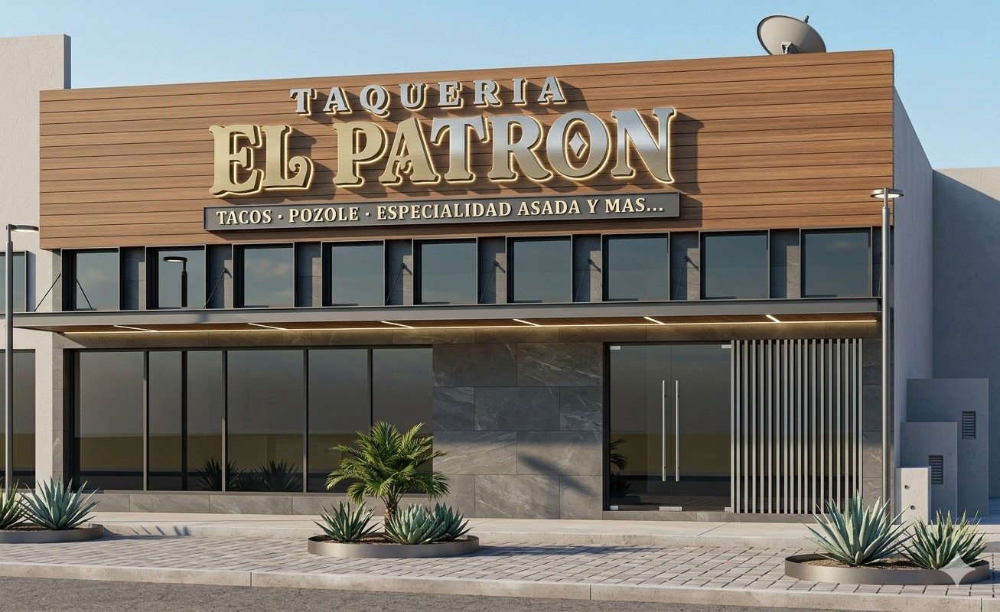
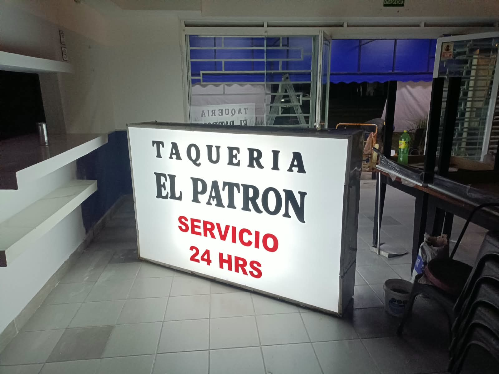
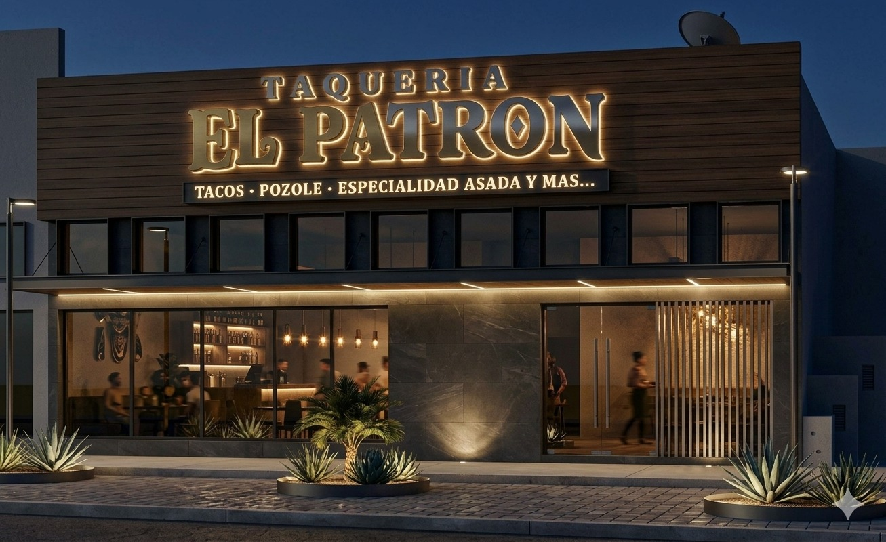
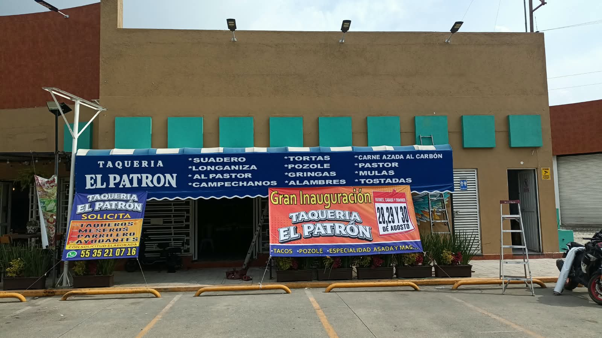

Taquería El Patrón — Servicio 24 horas
Tacos y pozole.
Asada 24 horas.
Especialistas en |
Una taquería mexicana auténtica para quienes buscan ingredientes frescos, atención cercana y ese antojo bien servido a cualquier hora del día.

de sabor
Sobre El Patrón
Tradición mexicana con una presencia moderna.
Taquería El Patrón nace para servir platillos mexicanos auténticos en un ambiente acogedor y atractivo. La propuesta es simple y poderosa: sabor consistente, ingredientes frescos y atención que invita a volver.
Sabor auténtico
Tacos, pozole y antojitos preparados para quienes sí distinguen una receta bien hecha.
Ingredientes frescos
Una experiencia construida alrededor de calidad, sazón y preparación al momento.
Servicio 24 horas
Una opción conveniente para desayunar, comer, cenar o cerrar la noche con buen taco.
Menú de la casa
Del trompo al plato, todo con carácter.
La oferta de El Patrón reúne clásicos taqueros, pozole y especialidad asada para atender antojos de día, de noche y de madrugada.

La línea taquera que manda
Tortilla, carne, salsa y el punto exacto para que cada orden llegue con sabor completo.
- Suadero
- Longaniza
- Al pastor
- Campechanos
- Pastor

Para comer con calma o pedir al centro
Platos mexicanos que se sienten caseros, abundantes y listos para compartir.
- Pozole
- Tortas
- Gringas
- Mulas
- Tostadas

Carne asada al carbón y más
El sabor ahumado de la parrilla como protagonista para quienes llegan con hambre de verdad.
- Carne asada al carbón
- Alambres
- Especialidad asada
- Más opciones taqueras de la casa
Ven por tu antojo favorito o descubre el plato que se va a volver tu ritual.
Planear mi visita¿Por qué elegirnos?
La taquería para volver otra vez.
Abierto 24 horas
Comida mexicana auténtica disponible cuando el antojo aparece, sin limitarse al horario tradicional.
Frescura en cada bocado
Una cocina enfocada en ingredientes frescos, sazón tradicional y preparaciones que llegan calientes a la mesa.
Ambiente acogedor
Un espacio moderno y atractivo, pensado para comer cómodo y regresar con ganas.
Menú directo y cumplidor
Tacos, pozole, tortas, gringas, mulas, alambres, tostadas y carne asada al carbón.
Galería
El Patrón por dentro y por fuera.
Una mezcla de imagen real del local, visual de fachada y referentes gastronómicos alineados al menú de la casa.




Visítanos
Tu próxima parada tiene nombre de taquería.
El Patrón abre 24 horas para tacos, pozole y carne asada. La gran inauguración está proyectada para el 21 de agosto.
- Servicio 24 horas
- Tacos, pozole, especialidad asada y más
- Gran inauguración: 21 de agosto
El servicio 24 horas hace fácil llegar por desayuno, comida, cena o antojo de madrugada.